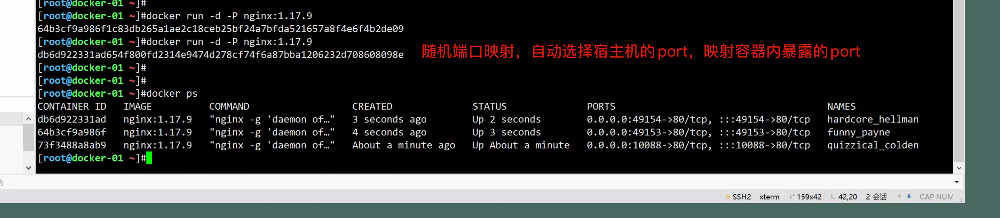
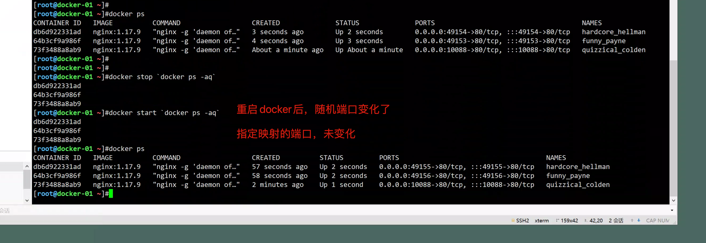
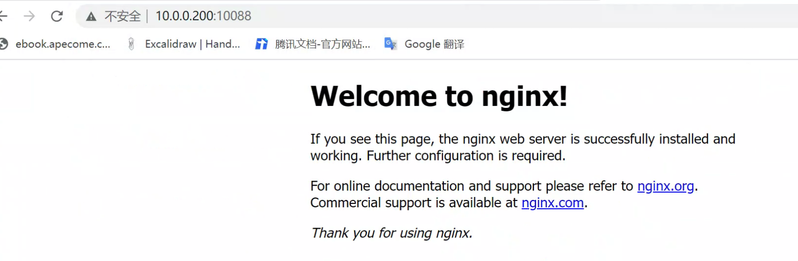
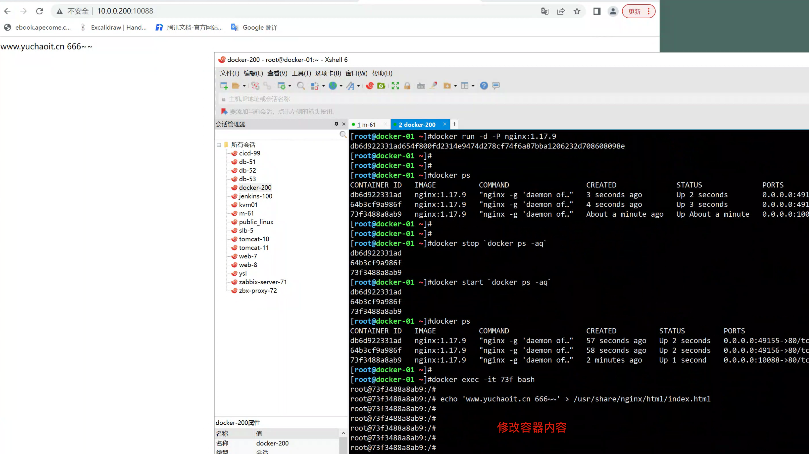
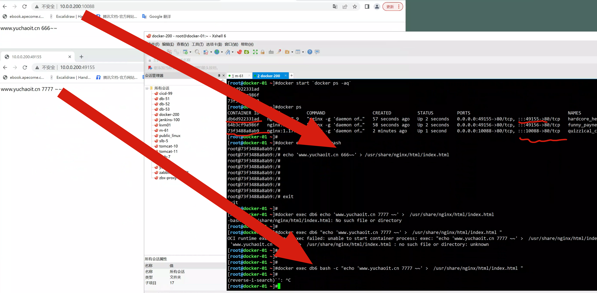
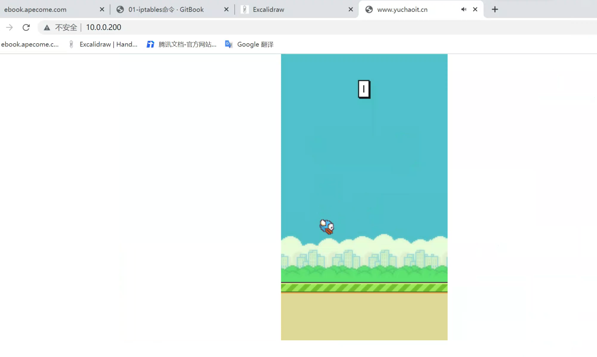
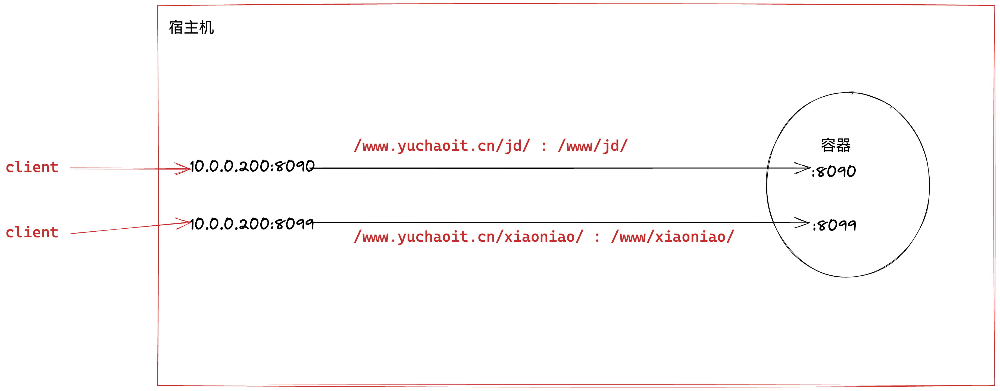
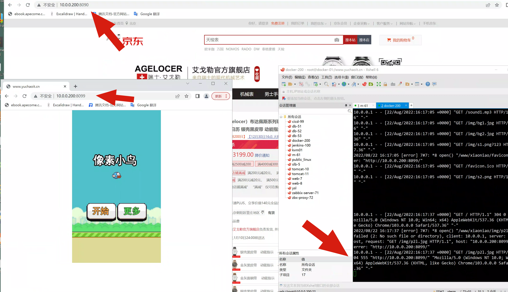
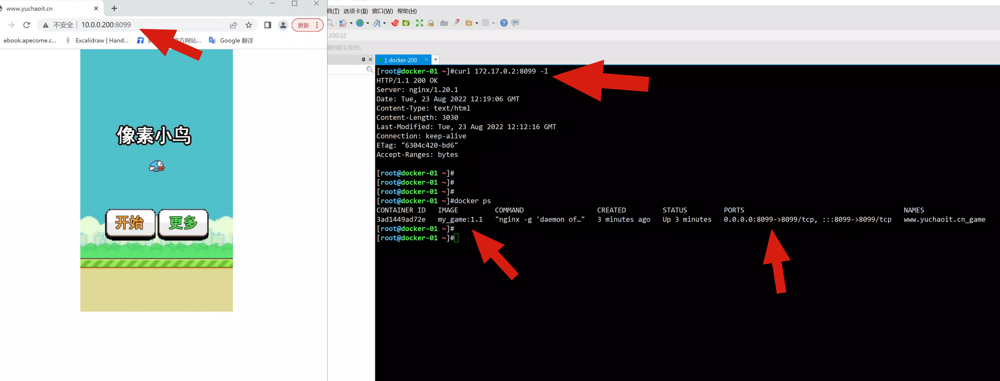
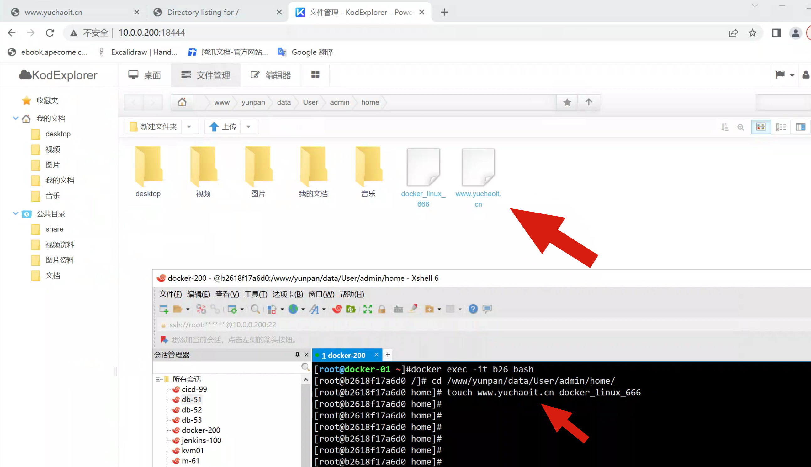

03_docker存储与网络
1.配置容器端口映射
我们使用容器，不单是运行单机程序，当然是需要运行网络服务在容器中，那么如何配置docker的容器网络，基础网络配置，网桥配置，端口映射，还是很重要。
这里的学习思路，是先学习基本的容器网络操作命令
后面环节深入学习docker网络配置。
容器里运行web服务，是基本需求，想要让外部访问容器内应用，可以通过参数
-p port:port
-P 随机port:port
宿主机：容器
运行nginx容器
# 指定端口映射
[root@docker-01 ~]#docker run -d -p 10088:80 nginx:1.17.9
73f3488a8ab95c412f5bce5df74e4efa27b80e26bb9acd10d4e762547ac244ba
[root@docker-01 ~]#
[root@docker-01 ~]#
[root@docker-01 ~]#docker ps
CONTAINER ID IMAGE COMMAND CREATED STATUS PORTS NAMES
73f3488a8ab9 nginx:1.17.9 "nginx -g 'daemon of…" 3 seconds ago Up 2 seconds 0.0.0.0:10088->80/tcp, :::10088->80/tcp quizzical_colden
# 只能运行一次，因为宿主机的10088被绑定了
[root@docker-01 ~]#netstat -tunlp |grep 10088
tcp 0 0 0.0.0.0:10088 0.0.0.0:* LISTEN 20452/docker-proxy
tcp6 0 0 :::10088 :::* LISTEN 20459/docker-proxy
# 随机端口映射
[root@docker-01 ~]#docker run -d -P nginx:1.17.9
64b3cf9a986f1c83db265a1ae2c18ceb25bf24a7bfda521657a8f4e6f4b2de09
[root@docker-01 ~]#docker run -d -P nginx:1.17.9
db6d922331ad654f800fd2314e9474d278cf74f6a87bba1206232d708608098e
[root@docker-01 ~]#
[root@docker-01 ~]#
[root@docker-01 ~]#docker ps
CONTAINER ID IMAGE COMMAND CREATED STATUS PORTS NAMES
db6d922331ad nginx:1.17.9 "nginx -g 'daemon of…" 3 seconds ago Up 2 seconds 0.0.0.0:49154->80/tcp, :::49154->80/tcp hardcore_hellman
64b3cf9a986f nginx:1.17.9 "nginx -g 'daemon of…" 4 seconds ago Up 3 seconds 0.0.0.0:49153->80/tcp, :::49153->80/tcp funny_payne
73f3488a8ab9 nginx:1.17.9 "nginx -g 'daemon of…" About a minute ago Up About a minute 0.0.0.0:10088->80/tcp, :::10088->80/tcp quizzical_colden
[root@docker-01 ~]#
# 并且随机端口有一个弊端，重启后，端口会变化

重启导致随机端口变化

查看容器端口映射情况
[root@docker-01 ~]#docker port 73f
80/tcp -> 0.0.0.0:10088
80/tcp -> :::10088
[root@docker-01 ~]#
访问容器nginx

修改容器内nginx页面
# 交互式修改容器内容
[root@docker-01 ~]#docker exec -it 73f bash
root@73f3488a8ab9:/#
root@73f3488a8ab9:/# echo 'www.yuchaoit.cn 666~~' > /usr/share/nginx/html/index.html
# 非交互式修改容器内容
[root@docker-01 ~]#docker exec db6 bash -c "echo 'www.yuchaoit.cn 7777 ~~' > /usr/share/nginx/html/index.html "
[root@docker-01 ~]#


2.配置docker数据目录管理
我们使用docker容器，也需要关注容器内的存储
Data Volumes是一个可供一个或多个容器使用的特殊目录
- 数据卷可以在容器内共享和重用
- 数据卷的修改会立即生效
- 数据卷的更新，不回影响镜像
- 数据卷会一直存在，即使容器被删除
数据卷的用法类似于Linux的mount挂载操作
镜像中被指定为挂载点的目录
其中文件会被隐藏，显示挂载的数据卷。
数据卷容器Data Volume Containers
数据卷容器涉及容器间共享的持久化、序列化的数据。
数据卷容器就是一个普通的容器，专门用于提供数据卷供给其他容器挂载使用。
-v 映射容器目录
-v 宿主机目录:容器内目录
准备游戏代码测试
1.宿主机准备游戏代码
[root@docker-01 ~]#
[root@docker-01 ~]#unzip xiaoniaofeifei.zip -d /www.yuchaoit.cn/xiaoniao/
[root@docker-01 /www.yuchaoit.cn/xiaoniao]#ll
total 140
-rw-r--r-- 1 root root 15329 Aug 2 2014 2000.png
-rw-r--r-- 1 root root 51562 Aug 2 2014 21.js
-rw-r--r-- 1 root root 254 Aug 2 2014 icon.png
drwxr-xr-x 2 root root 102 Aug 8 2014 img
-rw-r--r-- 1 root root 3049 Aug 2 2014 index.html
-rw-r--r-- 1 root root 63008 Aug 2 2014 sound1.mp3
创建容器且映射宿主机文件
[root@docker-01 /www.yuchaoit.cn/xiaoniao]#docker run --name xiaonao-web -d -p 80:80 -v /www.yuchaoit.cn/xiaoniao/:/usr/share/nginx/html nginx:1.17.9
b48c4d5249a5239c3f8103d37a01309cb8f5f1f483e91c0972f8597af1f5e936
[root@docker-01 /www.yuchaoit.cn/xiaoniao]#
[root@docker-01 /www.yuchaoit.cn/xiaoniao]#
[root@docker-01 /www.yuchaoit.cn/xiaoniao]#docker ps
CONTAINER ID IMAGE COMMAND CREATED STATUS PORTS NAMES
b48c4d5249a5 nginx:1.17.9 "nginx -g 'daemon of…" 2 seconds ago Up 1 second 0.0.0.0:80->80/tcp, :::80->80/tcp xiaonao-web

3.容器多目录映射
需求，有2个静态站点，都需要挂到容器发布，以端口区分即可。
要求
- 源码
- nginx配置都从宿主机挂载

1.准备好宿主机代码
# git clone https://gitee.com/xiangyu_code/jd_detail_static_page.git
[root@docker-01 /www.yuchaoit.cn]#ll
total 0
drwxr-xr-x 6 root root 114 Aug 22 23:51 jd
drwxr-xr-x 3 root root 98 Aug 22 23:40 xiaoniao
2.准备好nginx配置文件
mkdir /my_nginx/ -p
cat >/my_nginx/docket-nginx.conf <<'EOF'
server{
listen 8090;
server_name localhost;
location / {
root /www/jd/;
index index.html;
}
}
server{
listen 8099;
server_name localhost;
location / {
root /www/xiaoniao/;
index index.html;
}
}
EOF
3.创建容器，多端口，多数据目录挂载
docker run \
--name jd_xiaoniao_web \
-p 8090:8090 \
-p 8099:8099 \
-v /www.yuchaoit.cn/jd/:/www/jd/ \
-v /www.yuchaoit.cn/xiaoniao/:/www/xiaoniao/ \
-v /my_nginx/:/etc/nginx/conf.d/ \
-d nginx:1.17.9
效果图
[root@docker-01 /www.yuchaoit.cn]#docker logs -f jd_xiaoniao_web

查看容器的数据卷
"Mounts": [
{
"Type": "bind",
"Source": "/www.yuchaoit.cn/jd",
"Destination": "/www/jd",
"Mode": "",
"RW": true,
"Propagation": "rprivate"
},
{
"Type": "bind",
"Source": "/www.yuchaoit.cn/xiaoniao",
"Destination": "/www/xiaoniao",
"Mode": "",
"RW": true,
"Propagation": "rprivate"
},
{
"Type": "bind",
"Source": "/my_nginx",
"Destination": "/etc/nginx/conf.d",
"Mode": "",
"RW": true,
"Propagation": "rprivate"
}
],
4.制作Docker游戏镜像
镜像是容器的基础，除了可以去docker hub下载镜像，还可以基于本地容器进行镜像提交，定制镜像。
镜像是多层存储，每一层都是在前一层的基础上修改。
练习，基于一个现有的centos容器，制作一个centos+vim+nginx的镜像。
- 默认centos镜像，没有vim，nginx
实践
1. 创建且进入centos7容器
[root@docker-01 /www.yuchaoit.cn]#docker run -it centos:7 bash
2.安装vim与nginx
# 修改yum源
curl -o /etc/yum.repos.d/CentOS-Base.repo https://mirrors.aliyun.com/repo/Centos-7.repo
curl -o /etc/yum.repos.d/epel.repo http://mirrors.aliyun.com/repo/epel-7.repo
3.安装
yum install vim nginx openssh-clients -y
4.提交游戏源码到容器内容
mkdir -p /www/xiaoniao
scp -r 10.0.0.200:/www.yuchaoit.cn/xiaoniao/* /www/xiaoniao
cat > /etc/nginx/conf.d/docket-nginx.conf <<'EOF'
server{
listen 8099;
server_name localhost;
location / {
root /www/xiaoniao/;
index index.html;
}
}
EOF
5.提交容器为新的镜像
docker commit 容器id my_game:1.1
6.使用自建的镜像 ，运行nginx进程
docker run -d -p 8099:8099 --name www.yuchaoit.cn_game my_game:1.1 nginx -g 'daemon off;'
7.访问

导出镜像，发给测试组
[root@docker-01 ~]#docker save -o /opt/www.yuchaoit.cn_game_image.tar my_game:1.1
[root@docker-01 ~]#ll /opt/www.yuchaoit.cn_game_image.tar -h
-rw------- 1 root root 507M Aug 23 20:32 /opt/www.yuchaoit.cn_game_image.tar
5.再制作一个私有云盘镜像
实践
这会你就得思考，你这个源码部署，是在centos里，还是ubuntu里，基础镜像是谁？
以及有时候测试，我们也会直接去搜索，如python，php的镜像
1. 创建且进入centos7容器
docker run -it centos:7 bash
2.安装vim与nginx
# 修改yum源
curl -o /etc/yum.repos.d/CentOS-Base.repo https://mirrors.aliyun.com/repo/Centos-7.repo
curl -o /etc/yum.repos.d/epel.repo http://mirrors.aliyun.com/repo/epel-7.repo
yum makecache fast
3.安装php 依赖
yum install vim nginx openssh-clients php-fpm -y
[root@bfe00f4284e7 /]# php-fpm -v
PHP 5.4.16 (fpm-fcgi) (built: Apr 1 2020 04:09:12)
Copyright (c) 1997-2013 The PHP Group
Zend Engine v2.4.0, Copyright (c) 1998-2013 Zend Technologies
4.修改php-fpm程序配置
sed -i '/^user/c user = nginx' /etc/php-fpm.d/www.conf
sed -i '/^group/c group = nginx' /etc/php-fpm.d/www.conf
sed -i '/daemonize/s#no#yes#g' /etc/php-fpm.conf
5.启动php-fpm进程
php-fpm -c /etc/php.ini -y /etc/php-fpm.conf
[root@bfe00f4284e7 /]# php-fpm -c /etc/php.ini -y /etc/php-fpm.conf
[root@bfe00f4284e7 /]#
[root@bfe00f4284e7 /]#
[root@bfe00f4284e7 /]# ps -ef|grep php
root 189 1 0 12:39 ? 00:00:00 php-fpm: master process (/etc/php-fpm.conf)
nginx 190 189 0 12:39 ? 00:00:00 php-fpm: pool www
nginx 191 189 0 12:39 ? 00:00:00 php-fpm: pool www
nginx 192 189 0 12:39 ? 00:00:00 php-fpm: pool www
nginx 193 189 0 12:39 ? 00:00:00 php-fpm: pool www
nginx 194 189 0 12:39 ? 00:00:00 php-fpm: pool www
root 196 1 0 12:39 pts/0 00:00:00 grep --color=auto php
6.配置nginx
4.提交游戏源码到容器内容
mkdir -p /www/yunpan
scp -r 10.0.0.200:/www.yuchaoit.cn/yunpan/* /www/yunpan
chown -R nginx.nginx /www
cat > /etc/nginx/conf.d/yunpan.conf << 'EOF'
server{
listen 8444;
server_name localhost;
root /www/yunpan;
index index.php ;
location ~ \.php$ {
root /www/yunpan;
fastcgi_pass 127.0.0.1:9000;
fastcgi_index index.php;
fastcgi_param SCRIPT_FILENAME $document_root$fastcgi_script_name;
include fastcgi_params;
}
}
EOF
5.启动nginx
[root@bfe00f4284e7 conf.d]# nginx
[root@bfe00f4284e7 conf.d]#
[root@bfe00f4284e7 conf.d]# ps -ef
UID PID PPID C STIME TTY TIME CMD
root 1 0 0 12:34 pts/0 00:00:00 bash
root 189 1 0 12:39 ? 00:00:00 php-fpm: master process (/etc/php-fpm.con
nginx 190 189 0 12:39 ? 00:00:00 php-fpm: pool www
nginx 191 189 0 12:39 ? 00:00:00 php-fpm: pool www
nginx 192 189 0 12:39 ? 00:00:00 php-fpm: pool www
nginx 193 189 0 12:39 ? 00:00:00 php-fpm: pool www
nginx 194 189 0 12:39 ? 00:00:00 php-fpm: pool www
root 210 1 0 12:48 ? 00:00:00 nginx: master process nginx
nginx 211 210 0 12:48 ? 00:00:00 nginx: worker process
nginx 212 210 0 12:48 ? 00:00:00 nginx: worker process
nginx 213 210 0 12:48 ? 00:00:00 nginx: worker process
nginx 214 210 0 12:48 ? 00:00:00 nginx: worker process
root 216 1 0 12:48 pts/0 00:00:00 ps -ef
6.访问容器ip测试
[root@bfe00f4284e7 conf.d]# yum install net-tools -y
7.最终访问结果
[root@bfe00f4284e7 conf.d]# curl -L -I 127.0.0.1:8444
HTTP/1.1 302 Moved Temporarily
Server: nginx/1.20.1
Date: Tue, 23 Aug 2022 12:53:49 GMT
Content-Type: text/html; charset=utf-8
Connection: keep-alive
X-Powered-By: PHP/5.4.16
Set-Cookie: KOD_SESSION_ID_ef489=v5t5n1t405738m0tq6vev3fu51; path=/
Set-Cookie: KOD_SESSION_ID_ef489=v5t5n1t405738m0tq6vev3fu51; path=/
Set-Cookie: KOD_SESSION_ID_ef489=v5t5n1t405738m0tq6vev3fu51; path=/
Set-Cookie: KOD_SESSION_SSO=jl839v873b3fm35a7llgmq5623; path=/
Expires: Thu, 19 Nov 1981 08:52:00 GMT
Cache-Control: no-store, no-cache, must-revalidate, post-check=0, pre-check=0
Pragma: no-cache
Set-Cookie: KOD_SESSION_ID_ef489=deleted; expires=Thu, 01-Jan-1970 00:00:01 GMT; path=/
Set-Cookie: kod_name=deleted; expires=Thu, 01-Jan-1970 00:00:01 GMT
Set-Cookie: kodToken=deleted; expires=Thu, 01-Jan-1970 00:00:01 GMT
Set-Cookie: X-CSRF-TOKEN=deleted; expires=Thu, 01-Jan-1970 00:00:01 GMT
Location: ./index.php?user/login
HTTP/1.1 200 OK
Server: nginx/1.20.1
Date: Tue, 23 Aug 2022 12:53:49 GMT
Content-Type: text/html; charset=utf-8
Connection: keep-alive
X-Powered-By: PHP/5.4.16
Set-Cookie: KOD_SESSION_ID_ef489=sbndiopck51mvsqcv86urjhai5; path=/
Set-Cookie: KOD_SESSION_ID_ef489=sbndiopck51mvsqcv86urjhai5; path=/
Set-Cookie: KOD_SESSION_ID_ef489=sbndiopck51mvsqcv86urjhai5; path=/
Set-Cookie: KOD_SESSION_ID_ef489=sbndiopck51mvsqcv86urjhai5; path=/
Set-Cookie: KOD_SESSION_ID_ef489=sbndiopck51mvsqcv86urjhai5; path=/
Expires: Thu, 19 Nov 1981 08:52:00 GMT
Cache-Control: no-store, no-cache, must-revalidate, post-check=0, pre-check=0
Pragma: no-cache
8.提交新的云盘镜像
[root@docker-01 ~]#docker commit bfe00f4284e7 yunpan:1.4
sha256:372bc277f74f66b1302147bfc033beedad18c6c4d38ef9015f4b1ff35dd45383
9.启动测试，默认是不会有启动命令，的需要自己传入
一般我们会构造启动脚本，放入容器
docker run -it yunpan:1.4 bash
[root@2e4f6354cfad /]# cat init.sh
#!/bin/bash
#author: www.yuchaoit.cn
php-fpm -c /etc/php.ini -y /etc/php-fpm.conf
nginx -g 'daemon off;'
[root@2e4f6354cfad /]#
[root@2e4f6354cfad /]# chmod +x init.sh
10.若是再提交新镜像的话，只需要修改容器，重新提交记录即可
[root@docker-01 ~]#docker commit 2e4f6354cfad yunpan:2
sha256:16449366f18cc19bb471963152e0095ad31901bc1575b98a6b27ab283f7aeaeb
11.启动访问
[root@docker-01 ~]#docker run -d -p 18444:8444 yunpan:2 /bin/bash /init.sh
b2618f17a6d0b95242a22c1d4b9dd7f9abd140c0b24281a5a2c879411733ab12
[root@docker-01 ~]#
[root@docker-01 ~]#docker ps
CONTAINER ID IMAGE COMMAND CREATED STATUS PORTS NAMES
b2618f17a6d0 yunpan:2 "/bin/bash /init.sh" 2 seconds ago Up 1 second 0.0.0.0:18444->8444/tcp, :::18444->8444/tcp epic_buck
[root@docker-01 ~]#
12.发现缺少php依赖，进入容器修改即可
[root@docker-01 ~]#docker exec -it b26 bash
[root@b2618f17a6d0 /]#
[root@b2618f17a6d0 /]#
[root@b2618f17a6d0 /]# yum install php-mbstring php-gd -y
13.重启容器
[root@docker-01 ~]#docker ps
CONTAINER ID IMAGE COMMAND CREATED STATUS PORTS NAMES
b2618f17a6d0 yunpan:2 "/bin/bash /init.sh" About a minute ago Up About a minute 0.0.0.0:18444->8444/tcp, :::18444->8444/tcp epic_buck
[root@docker-01 ~]#docker restart b26
14.测试没问题后，提交新的可以发布的镜像
admin
chaoge666
[root@docker-01 ~]#docker commit b26 yunpan:3
sha256:bca14295af671c83d24da11c248b4013d2d15b82db9f8d7f37ecbd539fd07aa8
15.修改容器内数据
